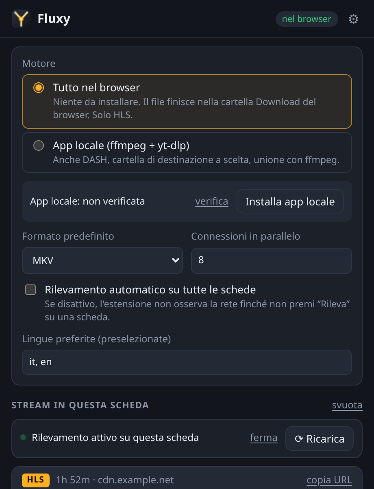

Tutto nel browser.
O con l'app locale.
Di base Fluxy scarica e unisce tutto dentro l'estensione. Se ti serve di più, un clic prepara l'installazione di ffmpeg e yt-dlp.
predefinito
Nel browser
- Niente da installare
- HLS, anche cifrato AES-128
- MKV o MP4 in Download
- Nessun dato inviato a server esterni
facoltativa
App locale
- Anche DASH
- Cartella di destinazione a scelta
- Unione con ffmpeg
- Installer per Linux in un clic
